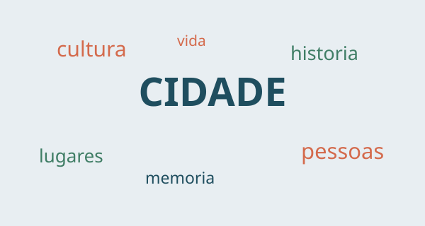

Afonso Lopes -> Ver projetos
Trabalhos realizados ao longo da disciplina.
Interfaces Web aborda a criação de páginas através de HTML e CSS. Durante os laboratórios aprendemos a organizar conteúdo, criar layouts e adaptar uma página a diferentes tamanhos de ecrã.
Também exploramos imagens, links, navegação e os elementos semânticos do HTML5.
